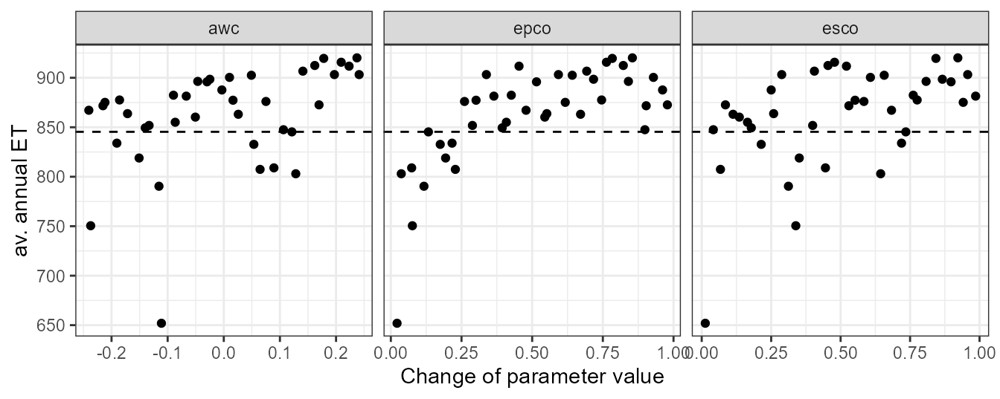
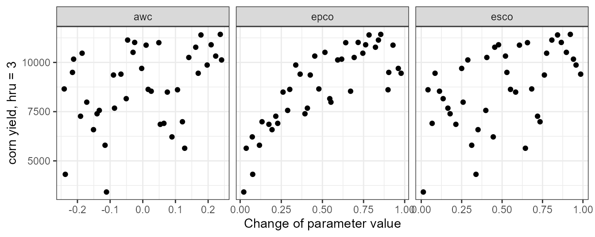
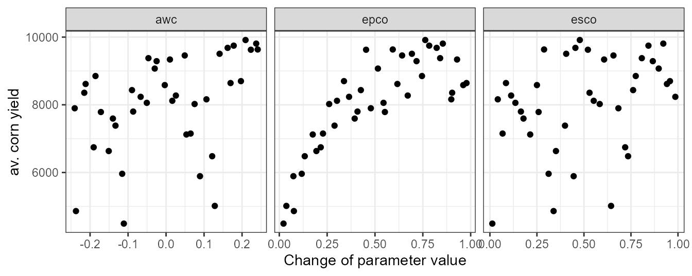
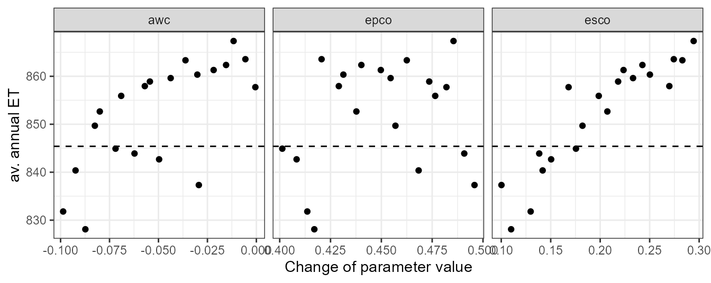
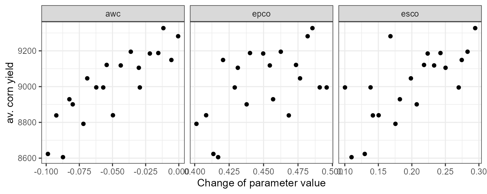
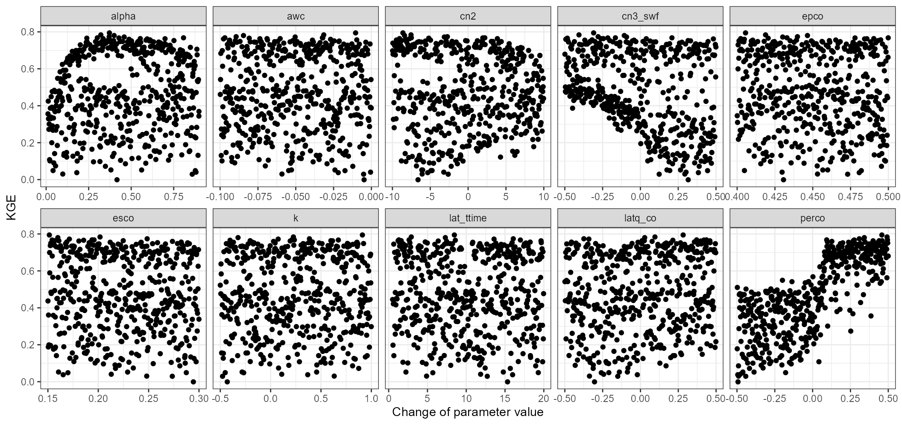
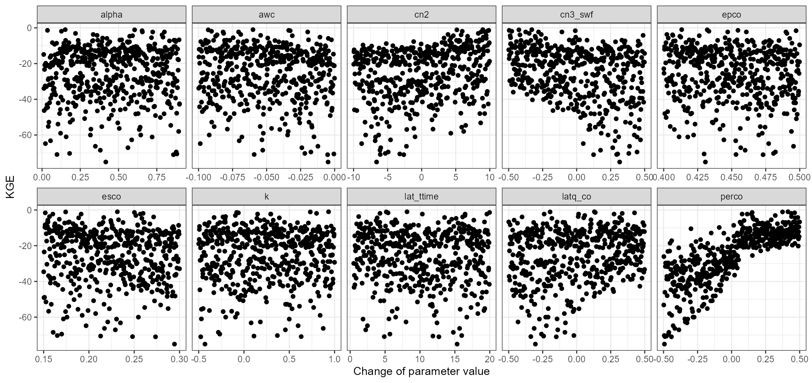
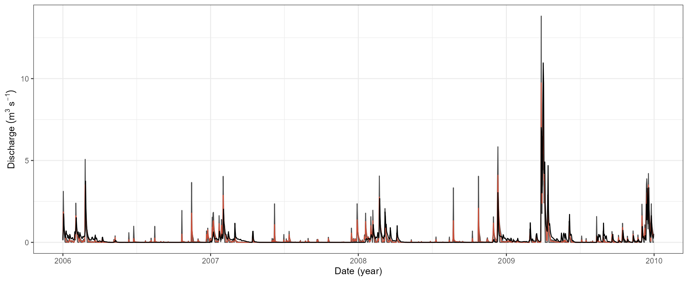
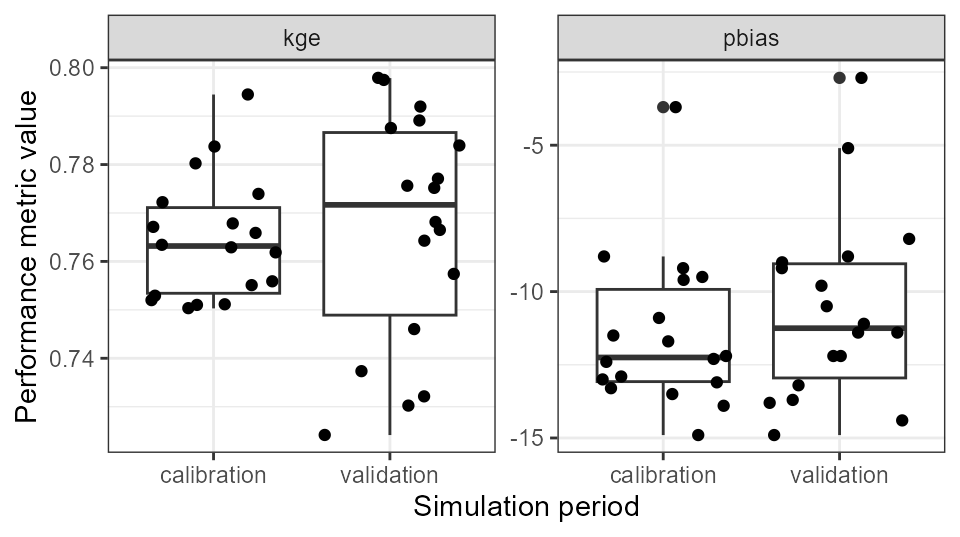
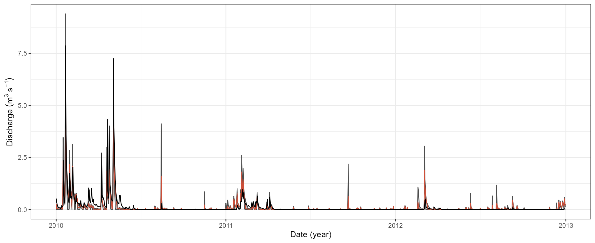

Aim of this article
This article should give you a general idea on how you can integrate
SWATplusR in typical model calibration routines. There are
many ways to approach model calibration, but one of the most frequent
ways is to sample a set of parameter combinations, run the model,
evaluate the simulation outputs and either perform further simulations
or consider the model as acceptably calibrated (well that usually does
not happen after one round of simulations). Therefore the article will
address the following tasks:
- Sampling SWAT parameter combinations using the two approaches, random and Latin Hypercube Sampling (LHS)
- Performing model simulations with
SWATplusR(using parallel processing to speed things up) - Evaluating model simulations with performance metrics which are often used in hydrology
R packages
The examples below use different functions from several
R packages. I recommend to install and load already all
required packages at this point. I will not explain these packages here,
but I will refer to some of their functionality in the examples
below.
# If any of the packages is not installed already run the respective lines here.
# General data science packages
install.packages('dplyr')
install.packages('tibble')
install.packages('purrr')
install.packages('lubridate')
# Latin Hypercube sampling
install.packages('lhs')
# Hydrological model performance metrics
install.packages('hydroGOF')Parameter sampling
Two frequently used sampling strategies for parameter sampling are
simple generic random sampling and Latin Hypercube Sampling (LHS). You
can implement both sampling strategies quite easily in R.
To draw random uniform samples you can use the function
runif() from the base R package
stats (R
Core Team, 2019). Different LHS sampling routines are
available with the R package lhs (Carnell, 2019).
Other procedures, such as certain methods for parameter sensitivity
analysis require specifically tailored sampling schemes. These sampling
schemes are often provided with the respective sensitivity analysis
related R packages.
Defining parameter boundaries
Before we can draw parameter samples we have to define:
- the parameters that we want to include in the parameter set
- the type of change we want to apply to a parameter
- and the ranges in which each parameter should be changed.
The names of the parameters follow a specific syntax that controls the type of parameter change and can include further conditions for a parameter change. The parameter syntax is explained in the Get started section. If you are not familiar with the parameter name syntax already I recommend you to have a look there first.
We can define the parameter names and the boundaries for the
parameter changes in a tibble (Müller and Wickham, 2019) that we
then use in the parameter sampling. I recommend to use a
tibble here rather than the synonymous
data.frame as the base R data frames may have
issues with more complex column names that we need here. The
tibble for the parameter boundaries is structured as
illustrated in the example below. We define a column name and assign two
values which represent the lower and the upper boundaries for possible
parameter changes. The example below uses 7 SWAT+ parameters that are
often included in a model calibration. The first line in the
tibble definition can for example be translated as follows:
We define the parameter ‘cn2’ which is an ‘.mgt’
parameter and we want to change the initial parameter values by adding
or substracting absolute values (‘abschg’) in the range -15 to
10.
par_bound <- tibble('cn2.hru | change = abschg' = c(-15, 10),
'lat_ttime.hru | change = absval' = c(0.5, 50),
'lat_len.hru | change = absval' = c(10, 100),
'k.sol | change = pctchg' = c(-50, 50),
'awc.sol | change = pctchg' = c(-50, 50),
'esco.hru | change = absval' = c(0, 1),
'epco.hru | change = absval' = c(0, 1))Random sampling with runif()
The most basic way to draw random parameter samples is to use the
base R function runif(). With runif() you
create a uniformly distributed vector. To draw a specific number of
parameter sets with runif() you have to create a vector
with that number of random values for each parameter and transform them
to their parameter ranges. Below you find a simple approach to create a
table of parameter combinations using a map*() function
from the functional programming package purrr (Henry and Wickham,
2019). Even if you do not fully understand what
map_df() and the code below do you can use this as a recipe
for drawing random uniform samples. This approach should work in your
practical cases as well.
n_sample <- 250
par_runif <- map_df(par_bound, ~ runif(n_sample, .x[1], .x[2]))
par_runif
#> # A tibble: 250 × 7
#> `cn2.hru | change = abschg` lat_tti…¹ lat_l…² k.sol…³ awc.s…⁴ esco.…⁵ epco.…⁶
#> <dbl> <dbl> <dbl> <dbl> <dbl> <dbl> <dbl>
#> 1 6.92 29.3 86.7 49.0 -4.76 0.932 0.513
#> 2 -14.5 22.8 83.9 -39.2 3.80 0.210 0.605
#> 3 2.91 38.1 19.0 7.93 20.0 0.761 0.351
#> 4 -4.74 49.6 17.9 26.9 31.3 0.704 0.195
#> 5 -8.82 5.02 93.9 -45.0 -24.6 0.196 0.719
#> 6 -5.16 24.5 26.3 39.0 -38.7 0.406 0.665
#> 7 1.62 7.16 62.0 -35.0 -8.02 0.512 0.206
#> 8 8.59 42.4 45.5 -48.4 -8.72 0.651 0.887
#> 9 -2.77 23.0 19.2 16.7 -20.9 0.105 0.691
#> 10 -9.72 29.2 53.6 42.5 -3.99 0.0445 0.309
#> # … with 240 more rows, and abbreviated variable names
#> # ¹`lat_ttime.hru | change = absval`, ²`lat_len.hru | change = absval`,
#> # ³`k.sol | change = pctchg`, ⁴`awc.sol | change = pctchg`,
#> # ⁵`esco.hru | change = absval`, ⁶`epco.hru | change = absval`LHS sampling with randomLHS()
In a very similar way as the random sampling you can draw LHS samples
by using the function randomLHS() from the lhs
package. This is my preferred way to sample parameter combinations, as
the parameter combinations are better distributed over the parameter
space compared to random sampling. Again we can use the defined
parameter boundaries to sample the LHS parameter set. You can consider
the code below as a further recipe to perform a sampling in your
modeling cases as well. I put the code for the LHS sampling into a
function, as we might use the same function more often later on.
sample_lhs <- function(par, n) {
n_par <- ncol(par)
randomLHS(n = n, k = n_par) %>% # Perform sampling
as_tibble(., .name_repair = 'minimal') %>% # Convert to a tibble
set_names(names(par)) %>% # Assign the parameter names with purrr
map2_df(., par, ~ (.x * (.y[2] - .y[1]) + .y[1])) # Scale parameter ranges
}
par_lhs <- sample_lhs(par_bound, 250)
par_lhs
#> # A tibble: 250 × 7
#> `cn2.hru | change = abschg` lat_tti…¹ lat_l…² k.sol…³ awc.s…⁴ esco.…⁵ epco.…⁶
#> <dbl> <dbl> <dbl> <dbl> <dbl> <dbl> <dbl>
#> 1 -13.7 43.4 41.4 36.3 2.13 0.0363 0.870
#> 2 -7.89 47.2 89.2 21.8 31.8 0.261 0.554
#> 3 8.02 15.6 72.4 -12.5 -19.1 0.671 0.174
#> 4 -1.23 1.49 81.7 22.9 -35.7 0.619 0.617
#> 5 6.55 47.4 58.3 -43.5 48.7 0.180 0.586
#> 6 -13.6 22.3 43.9 -39.0 -24.1 0.990 0.349
#> 7 -9.97 2.21 94.1 35.3 22.9 0.0453 0.817
#> 8 -2.17 42.8 44.8 19.7 15.5 0.00974 0.666
#> 9 2.92 24.3 88.5 -36.5 40.6 0.207 0.312
#> 10 -5.88 13.9 37.3 17.8 -29.2 0.890 0.393
#> # … with 240 more rows, and abbreviated variable names
#> # ¹`lat_ttime.hru | change = absval`, ²`lat_len.hru | change = absval`,
#> # ³`k.sol | change = pctchg`, ⁴`awc.sol | change = pctchg`,
#> # ⁵`esco.hru | change = absval`, ⁶`epco.hru | change = absval`A small calibration example
There are endless ways to approach a SWAT model calibration. Below I demonstrate a small workflow that could give some ideas on what to consider in a model calibration. The example shows a bare minimum example for calibrating discharge. Real case studies will very likely require more extensive calibration and evaluation depending of the scopes of a model setup. In SWAT model applications other variables such as the in-stream sediment load, or nutrient loads may be the variables of interest. This is not the focus of this small example.
Definition for the simulation experiments
For this small calibration example we will again use the SWAT+ demo
project to perform the model simulations. You can load the demo path
again by running load_demo(), or use the demo path from
previous examples, if you do have the demo project already on your hard
drive. Loading the existing demo with load_demo() in the
same path will not overwrite the existing demo, but will return the path
to the demo project that you can further use.
# The path where the SWAT demo project will be written
demo_path <- 'Define:/your/path'
# Loading a SWAT+ demo project
path_plus <- load_demo(dataset = 'project',
path = demo_path,
version = 'plus')A few catchment properties that we will use later on in the example I will define already at this point.
#Catchment area
cmt_area <- 22028300 #m2
# Average annual precipitation from station data
pcp_avann_obs <- 1069.2 #mm
# Average annual discharge in mm from station data
q_avann_obs <- 223.8 #mm
# Average annual ET estimated from pcp and q
et_avann_est <- pcp_avann_obs - q_avann_obsWe will only perform simulations for short time periods of only a few years to keep the computation times low, although we would have much longer observations. For our small example we define a calibration period from 2006 to 2009 with 3 years warm up period and a validation period from 2010 to 2012 again with 3 years warm up.
# Calibration period
cal_start <- 20030101
cal_start_print <- 20060101
cal_end <- 20091231
# Validation period
val_start <- 20070101
val_start_print <- 20100101
val_end <- 20121231We will perform the calibration only for discharge. You can load
observed daily discharge data for the demo catchment with
load_demo(). We will already split the observation data
into the defined calibration and validation periods.
First checks
First checks of a model setup do not necessarily involve
R or SWATplusR, but the value of this step is
undeniably large. Before starting with any model calibration, run your
initial model setup (for example in the SWAT+Editor) and check your
aggregated and general model results for example with SWATcheck
which is implemented in the SWAT+Editor. This simple step gives you a
good idea if your model inputs, such as the mean annual precipitation
and temperature are plausible. Is the potential evapotranspiration
plausible? At this point the model should already include the farm
management that you want to implement in the model simulations. Do the
plant biomass and the crop yields look plausible to you? Are crop yields
in your region (e.g. from agricultural statistics) comparable to the
simulated crop yields? Make sure to do these initial checks and solve
any issues already at this stage of model development. Any model
calibration with wrong inputs or implausible configurations is a waste
of time and going back to this step and fixing the present issues is
very likely inevitable.
Constraining ET and keeping an eye on crop yields
In a first calibration step I recommend to check the fractions of the water input (i.e. precipitation) which are removed from the system by evapotranspiration (ET) and which remain in the catchment system (as different fractions of runoff). This analysis assumes that there is no major storage component (e.g. ground water storage) that fills up in the simulation time period. Thus this analysis should always include a longer simulation period (~10 years. More, even better!). The separation of precipitation into these two general fractions is mostly controlled by only a few SWAT parameters. The most relevant are esco (Soil evaporation compensation factor), epco (Plant uptake compensation factor), and awc (Available soil water capacity). We include the three parameters in a simulation experiment to learn how changes in the parameter values control the simulation of annual ET (and the remaining discharge) sums. These parameters may be included in further calibration steps, but there is a chance to constrain their parameter ranges already in this step and exclude parameter ranges that would result in implausible model simulations. This conceptual idea is somehow related to the soft calibration that is available in SWAT+, but the overall approach is different.
In this first round of simulations we will use the entire ranges (0
to 1) of esco and epco and vary their values by
reassigning new parameter values ('change = absval').
awc does already have initial values derived from the soil
input data. Thus, rewriting parameter values is not recommended. In the
case of spatially distributed parameter values we could perform relative
changes of the parameter values or add absolute values. In this case we
change the initial values of awc by +/- 25%.
par_bound <- tibble('esco.hru | change = absval' = c(0, 1),
'epco.hru | change = absval' = c(0, 1),
'awc.sol | change = relchg' = c(-0.25, 0.25))We only analyze three parameters here. So it is not necessary to draw large parameter sets and testing 40 to 100 parameter combinations may be enough to analyze patterns in ET.
par_et_yld <- sample_lhs(par_bound, 40)
par_et_yld
#> # A tibble: 40 × 3
#> `esco.hru | change = absval` `epco.hru | change = absval` awc.sol | change …¹
#> <dbl> <dbl> <dbl>
#> 1 0.376 0.0947 0.234
#> 2 0.582 0.660 -0.0952
#> 3 0.270 0.996 -0.0403
#> 4 0.679 0.876 -0.0593
#> 5 0.0775 0.905 -0.0119
#> 6 0.780 0.607 -0.113
#> 7 0.195 0.297 -0.0723
#> 8 0.0425 0.130 0.0250
#> 9 0.918 0.804 -0.242
#> 10 0.574 0.176 0.0544
#> # … with 30 more rows, and abbreviated variable name
#> # ¹`awc.sol | change = relchg`In this simulation experiment we will extract two outputs that we will analyze to get a better picture of ET and crop yields. Analyzing crop yields in larger model setups can be challenging, particularly when crop rotations are implemented in the management schedules (which is the case in the demo model setup). With crop rotations crop yields must be analyzed with great care in order to not mix up the yields of different crops. In such a case I would recommend to analyze the yields for individual HRUs and years or aggregate the data for different HRUs where you know that the same crop was planted and harvested in the same year. For our simple example I will show both approaches. Yet, an aggregation will be more work in a larger setup.
We define the basin average ET (et) and the yields for
the crops in the HRUs 2, 3, and 4 (yld_ag1) to which the
crop rotation management lrew_ag1 was assigned in the model
setup step as our model output variables. In this small setup these
three HRUs together are all HRUs with lrew_ag1 in the model
setup. We will return the simulation outputs as annual values for the
time period 2006 to 2012.
et_yld <- run_swatplus(project_path = path_plus,
output = list(et = define_output(file = 'basin_wb',
variable = 'et',
unit = 1),
yld_ag1 = define_output(file = 'hru_pw',
variable = 'yield',
unit = 2:4)),
parameter = par_et_yld,
start_date = cal_start,
end_date = cal_end,
start_date_print = cal_start_print,
output_interval = 'y',
n_thread = 4)
#> Building 4 threads in 'Define:/your/path/swatplus_rev60_demo/.model_run':
#> Completed 4 threads in 0S
#> Performing 40 simulations on 4 cores:
#> Completed 40 simulations in 1M 2S Model evaluation with dotty plots
Dotty plots are a very simple and effective way to evaluate parameter
ranges with respect to any scalar simulation output (e.g. average annual
sums) or performance metric (e.g. NSE, KGE, pbias, etc.). Below I
defined a function to do dotty plots. We will use this function for
model evaluation throughout the entire calibration example. It is
formulated in a very general way. Thus, you can use it in any of your
future work for model evaluation. The variable par must be
a data.frame or tibble with the parameter
values (which is the case for run_swat*() outputs).
var must be a vector of the scalar output variable that you
want to analyze with the dotty plots. This vector must have the same
length as the number of lines of the parameter table.
plot_dotty <- function(par, var, y_label = 'y', n_col = 3, y_lim = NULL) {
dotty_tbl <- par %>%
mutate(var = var) %>%
pivot_longer(., cols = -var, names_to = 'parameter')
gg <- ggplot(data = dotty_tbl) +
geom_point(aes(x = value, y = var)) +
facet_wrap(. ~ parameter, ncol = n_col, scales = "free_x") +
labs(x = 'Change of parameter value', y = y_label) +
theme_bw()
if (!is.null(y_lim)) {
gg <- gg + ylim(y_lim)
}
return(gg)
}Evalualtion of average annual ET
In the simulation runs we returned annual values. To analyze average annual values we have to calculate the mean of the annual values before we can analyze them in a dotty plot.
et_avann <- et_yld$simulation$et %>%
summarise(across(starts_with('run_'), .fns = mean)) %>%
unlist(.)We can now analyze the average annual ET values in dotty plots. To
put the simulated values into reference with “observed” values we add
the average annual ET that we estimated from discharge and precipitation
observations as a horizontal dashed line. plot_dotty()
returns a ggplot so we can simply add further ggplot layers
such as a geom_hline() to plot a horizontal line to the
plot.
plot_dotty(par = et_yld$parameter$values,
var = et_avann,
y_label = 'av. annual ET') +
geom_hline(yintercept = et_avann_est, linetype = 'dashed')
In the dotty plot we can see that larger values of awc, epco, and esco will result in average annual ET simulations that exceed the “observed” value. At their lower ends most simulations would result in ET values which are lower than the “observed” value. Constraining these parameters on their lower and upper ends of their parameter ranges will therefore be necessary for further simulations.
Evalualtion of corn yields
Constraining the parameters awc, epco, and esco can impact the simulation of plant growth and can reduce the crop yields. Plant growth is however a central part in a SWAT model and can affect many other processes (e.g. some water balance components and nutrient cycles). Therefore, constraining parameter ranges should not affect the plant growth and simulated yields. Typically a decrease in ET can also decrease simulated yields and these two goals can be conflicting in this calibration step.
First we will look into crop yields of single HRUs and individual
years. From the file ‘management.sch’ we can see that the
rotation of lrew_ag1 is pnut > corn >
cots > cots. So corn is planted and harvested in
the years 2004 and 2008 in these HRUs (where the year 2004 is in the
warm up period and was not printed). For the analysis with the dotty
plot we can extract now for example the yields for the year 2008 in the
HRU 3 (.$yld_ag1_3).
yld_corn_hru3 <- et_yld$simulation$yld_ag1_3 %>%
filter(year(date) == 2008) %>%
select(-date) %>%
unlist()The dotty plot shows that the most significant impact on the corn crop yields is caused by epco. From the plot we can conclude that epco should not be set lower than 0.4 or 0.5. Smaller are also visible for esco and awc and we should also constrain these two parameters on their lower boundaries.
plot_dotty(par = et_yld$parameter$values,
var = yld_corn_hru3,
y_label = 'corn yield, hru = 3')
We can perform the same analysis for the mean corn yields where we aggregate all corn yields for all HRUs and years in which corn was planted. The code below is one approach to aggregate the simulated yields.
yld_corn_ag1 <- et_yld$simulation[paste0('yld_ag1_', 2:4)] %>%
bind_rows(.) %>%
filter(year(date) == 2008) %>%
select(-date) %>%
summarise(., across(.cols = starts_with('run_'), .fns = mean)) %>%
unlist()The pattern of the aggregated yields is comparable to the dotty plot above and we would draw similar conclusions from this plot.
plot_dotty(par = et_yld$parameter$values,
var = yld_corn_ag1,
y_label = 'av. corn yield')
Updating parameter boundaries and validating ET and yields
Based on the simulations of ET and corn yields we can now try to constrain the boundaries of awc, epco, and esco. The aim is to limit ET in a range that is not too far off our observed value and not compromising the yield too much. Below you can see my suggestion for updated parameter boundaries.
par_bound <- tibble('esco.hru | change = absval' = c(0.15, 0.3),
'epco.hru | change = absval' = c(0.4, 0.5),
'awc.sol | change = relchg' = c(-0.1, 0.0))
par_et_yld <- sample_lhs(par_bound, 20)We will validate the updated parameter boundaries to see if we meet our aims for ET and yields. Again a small set of simulations might be enough to get a picture of ET and yield.
et_yld2 <- run_swatplus(project_path = path_plus,
output = list(et = define_output(file = 'basin_wb',
variable = 'et',
unit = 1),
yld_ag1 = define_output(file = 'hru_pw',
variable = 'yield',
unit = 2:4)),
parameter = par_et_yld,
start_date = cal_start,
end_date = cal_end,
start_date_print = cal_start_print,
output_interval = 'y',
n_thread = 4)
#> Building 4 threads in 'Define:/your/path/swatplus_rev60_demo/.model_run':
#> Completed 4 threads in 0S
#> Performing 40 simulations on 4 cores:
#> Completed 40 simulations in 28S Repeating the dotty plot for ET with the updated parameter boundaries shows that we overestimate ET now by about 20mm. Reducing the parameter values further would however decrease the corn yields too much. Thus, this is a compromise that we have to accept.
et_avann <- et_yld2$simulation$et %>%
summarise(across(starts_with('run_'), .fns = mean)) %>%
unlist(.)
plot_dotty(par = et_yld2$parameter$values,
var = et_avann,
y_label = 'av. annual ET') +
geom_hline(yintercept = et_avann_est, linetype = 'dashed')
Plotting the average corn yields we can see that the yields were decreased a bit. Yet, the simulated values are with 8.2 tons still within a plausible range.
yld_corn_ag1 <- et_yld2$simulation[paste0('yld_ag1_', 2:4)] %>%
bind_rows(.) %>%
filter(year(date) %in% c(2008, 2012)) %>%
select(-date) %>%
summarise(., across(.cols = starts_with('run_'), .fns = mean)) %>%
unlist()
plot_dotty(par = et_yld2$parameter$values,
var = yld_corn_ag1,
y_label = 'av. corn yield')
Calibration of discharge
Parameter definition and simulation runs
The calibration of daily discharge that we will perform for our demo catchment is a very basic one. In an actual case study I strongly recommend to perform a more comprehensive analysis of your catchment than we will do now. This example should just demonstrate how you can perform simulations, evaluate the simulations with model performance metrics and select model setups that represent the discharge well. A more comprehensive analysis could for example include the analysis of several water balance components, the separation of the hydrograph into fast runoff, lateral and base flow, a separation of the parameters into functional groups for calibration, or conditioning parameters into separate zones.
In this example, however, we will simultaneously change the values of
10 parameters which are relevant for the simulation of discharge. Our
parameter set includes the parameters ‘esco’, ‘epco’,
and ‘awc’ which we constrained already in the previous step.
Additionally we will include ‘cn2’, ‘cn3_swf’,
lat_ttime, latq_co, k, ‘perco’, and
alpha. Unless there is no experience with plausible parameter
ranges I would start with very wide ranges in which to vary the
parameter values. You may ask why for some parameters we intend to
replace the initial parameter valyes by new values (absval,
e.g. ‘esco’), while the initial values of other parameters are
changed by a certain fraction (relchg, e.g. ‘awc’)
or an absolute value (abschg, e.g. ‘cn2’, or
‘perco’). One reason for relchg and
abschg can be if a parameter does have a spatial
distribution (different initial values for different HRUs) which is the
case for ‘cn2’, ‘cn3_swf’, ‘awc’, and
‘perco’ in this model setup. ‘esco’ and
‘epco’ do have global default values and we do not have any
good reason to assign different values to different spatial units here.
Therefore the type of change we use is absval.
par_bound <- tibble('esco.hru | change = absval' = c(0.15, 0.3),
'epco.hru | change = absval' = c(0.4, 0.5),
'awc.sol | change = relchg' = c(-0.1, 0.0),
'cn2.hru | change = abschg' = c(-10, 10),
'cn3_swf.hru | change = abschg' = c(-0.5, 0.5),
'lat_ttime.hru | change = absval' = c(0.5, 20),
'latq_co.hru | change = abschg' = c(-0.5, 0.5),
'k.sol | change = relchg' = c(-0.5, 1),
'perco.hru | change = abschg' = c(-0.5, 0.5),
'alpha.aqu | change = absval' = c(0.01, 0.9))For the discharge simulations in the model calibration we sample 500 combinations of the 10 selected parameters within the defined boundaries with LHS sampling.
par_cal <- sample_lhs(par_bound, 500)In this small example we will now only focus on the discharge of the
main catchment outlet. Therefore, the only variable we will simulate for
the 500 parameter combinations par_cal is the daily channel
discharge. The simulation period we defined already at the beginning of
this article and saved the dates for the simulation period in the
variables cal_start, cal_end, and
cal_start_print.
qsim_cal <- run_swatplus(project_path = path_plus,
output = list(q = define_output(file = 'channel_sd',
variable = 'flo_out',
unit = 1)),
parameter = par_cal,
start_date = cal_start,
end_date = cal_end,
start_date_print = cal_start_print,
n_thread = 4)
#> Building 4 threads in 'Define:/your/path/swatplus_rev60_demo/.model_run':
#> Completed 4 threads in 0S
#> Performing 500 simulations on 4 cores:
#> Completed 500 simulations in 12M 40S Evaluation of model runs
We could use many different approaches and performance criteria to assess the performed model simulations and for an actual case study I would strongly recommend to do so. For our simple example we will use two performance metrics and apply them to our daily discharge simulations to compare the simulations with discharge observations at the main outlet. We will use the Kling-Gupta-Efficiency (KGE, Gupta et al. (2009)) and the percent bias (pbias, Gupta et al. (1999)) to evaluate the model simulations and to identify acceptable parameter combinations.
The code below can be used in many other situations where you want to
evaluate multiple model simulations from run_swat*()
simultaions with a performance metric that returns a single value. You
can again use this as a recipe for your future analysis. We use
map_dbl() to apply the function KGE() to all
simulated time series of the discharge to calculate the KGE
values for all parameter combinations.
kge_cal <- qsim_cal$simulation$q %>%
filter(date %in% qobs_cal$date) %>%
select(-date) %>%
map_dbl(., ~ KGE(.x, qobs_cal$discharge))With plot_dotty() we again generate dotty plots to
analyze the parameter ranges of all parameters.
plot_dotty(par = qsim_cal$parameter$values,
y_label = 'KGE', var = kge_cal, n_col = 5)
We can see that the KGE values of all simulations are already in a range between 0 and 0.8. This means that only based on the KGE we can already find model simulations that perform well in simulating the observed discharge. Some of the tested parameters also show clear patterns. The most significant patterns can be found for perco. perco shows a steep increase in KGE if we increase all perco values by increments of 0.05 to 0.50. Decreasing cn2 and cn3_swf also can slightly improve the model performance when we closely look at the outer boundary of the parameter response surface for those two parameters. alpha improves the model performance in a range between 0.2 and 0.5.
We can do the same analysis with the pbias and plot dotty plots for the parameters. Overall we can see now that the majority of model simulations result in a negative pbias and only a few simulations reach values close to 0. This is very likely due to our limitations we had in constraining ET without reducing crop yields too much. perco again shows a similar pattern by improving the pbias with increasing the initial values of perco. Also a reduction of cn3_swf and the improvement of pbias is in line with the results for KGE. An increase of cn2 however would now result in a decrease of pbias which is in conflict with the results for KGE. Thus, an improvement of KGE could only be achieved at a cost for pbias.
pbias_cal <- qsim_cal$simulation$q %>%
filter(date %in% qobs_cal$date) %>%
select(-date) %>%
map_dbl(., ~ pbias(.x, qobs_cal$discharge))
plot_dotty(par = qsim_cal$parameter$values,
y_label = 'KGE', var = pbias_cal, n_col = 5)
Selecting acceptable parameter combinations
We want to select parameter sets which perform well with respect to KGE and which at the same time do not result in absolute pbias values which are too large. In the SWAT Literature certain recommendations are very often used to define a model performance as acceptable. I would strongly recommend not to refer to such globally defined thresholds! In my opinion this is bad practice, as the potential to reach a certain value of model performance can also depend of other factors such as the variability and seasonality of the observed runoff. In some settings it can be easy to achieve high values in certain performance metrics, while in other settings it may be a challenge. Thus, the calculated values of performance metrics may help you in selecting simulations that performed better than others in your catchment, but they should not be used to justify a model setup as “good to use”.
In the dotty plots above you can see that in the setting of the demo catchment it is easy to achieve high KGE values, while it is more difficult to simulate enough discharge (negative pbias). To select a few simulations that we want to further investigate I defined thresholds for absolute pbias < 15% and for KGE > 0.75.
We will save the evaluation results for the selected parameter combinations in a table. This can be helpful for reporting the results in tabular form but also for plotting the model performance. It can be a challenge to identify one or a few best model simulations, particularly when you use several metrics to evaluate your simulations that additionally can vary in different ranges. In such cases you can for example just rank the model performances and calculate for example the sum of ranks. In this example I simply ranked the KGE values in a descending order and ranked the absolute pbias values. In a final step I ranked the sum of ranks to sort the model performances.
cal_eval_tbl <- tibble(id = run_sel,
run = names(run_sel),
kge = kge_cal[run_sel],
pbias = pbias_cal[run_sel],
rank = rank(rank(-kge) + rank(abs(pbias)))) %>%
arrange(rank)
cal_eval_tbl
#> # A tibble: 18 × 5
#> id run kge pbias rank
#> <int> <chr> <dbl> <dbl> <dbl>
#> 1 148 run_148 0.794 -9.6 1
#> 2 4 run_004 0.768 -9.5 3.5
#> 3 137 run_137 0.766 -8.8 3.5
#> 4 253 run_253 0.767 -9.2 3.5
#> 5 436 run_436 0.763 -3.7 3.5
#> 6 226 run_226 0.784 -12.2 6.5
#> 7 464 run_464 0.780 -11.7 6.5
#> 8 244 run_244 0.774 -12.3 8
#> 9 325 run_325 0.772 -12.4 9
#> 10 157 run_157 0.763 -11.5 10
#> 11 348 run_348 0.751 -10.9 11
#> 12 459 run_459 0.762 -13.1 12
#> 13 113 run_113 0.753 -12.9 13
#> 14 300 run_300 0.752 -13 14
#> 15 269 run_269 0.755 -13.5 15.5
#> 16 415 run_415 0.756 -13.9 15.5
#> 17 406 run_406 0.750 -13.3 17
#> 18 67 run_067 0.751 -14.9 18For reporting it may be interesting to have a table with your “best” simulation and the ranges of model performances for your acceptable model ensemble. Below we generate such a summary. Be careful with the “best” performance. This works in this case, as we already sorted the model performances based on their ranks and the best one is the top one in the table.
cal_summary <- cal_eval_tbl %>%
select(kge, pbias) %>%
pivot_longer(., cols = everything(),names_to = 'metric') %>%
group_by(metric) %>%
summarise(., best = value[1], min = min(value), max = max(value))
cal_summary
#> # A tibble: 2 × 4
#> metric best min max
#> <chr> <dbl> <dbl> <dbl>
#> 1 kge 0.794 0.750 0.794
#> 2 pbias -9.6 -14.9 -3.7As mentioned above it is bad practice to solely rely on certain values of performance metrics to define a model as well performing. The least thing we should always do is to plot the simulated discharge against the observed one to identify the strengths and the weaknesses of a calibration which should be improved in a next iteration of the model calibration.
For the evaluation of the simulated discharge time series we will summarize the selected simulations and calculate upper and lower boundaries of the daily model simulations. Additionally we select the simulations of the “best” simulation for plotting.
qcal_sel <- qsim_cal$simulation$q %>%
select(date, all_of(cal_eval_tbl$run)) %>%
select(-date) %>%
mutate(best = .[[1]],
qmax = pmap_dbl(., max),
qmin = pmap_dbl(., min)) %>%
select(best, qmin,qmax) %>%
mutate(date = qsim_cal$simulation$q$date)The plot below now shows the simulated ranges of the discharge as a grey area and the best run as a grey line. The observed discharge is plotted as a black line. We can clearly see that although the performance metrics already indicate a “good” model performance the simulations have quite significant weaknesses in their representation of the runoff processes. While the variability in the simulated discharge may already be ok, the simulated recession of the runoff peaks is rather poor and must be improved. At this point it would be strongly advised to continue with further iterations in the model calibration. It would require to repeat several of the steps above, while updating parameter boundaries and introducing/removing parameters in the parameter set. For this small example we will however stop with the calibration at this point.
ggplot(qcal_sel) +
geom_ribbon(aes(x = date, ymin = qmin, ymax = qmax), fill = 'grey30', alpha = 0.3) +
geom_line(aes(x = date, y = qmin), col = 'grey30') +
geom_line(aes(x = date, y = qmax), col = 'grey30') +
geom_line(aes(x = date, y = best), col = 'tomato3') +
geom_line(data = qobs_cal, aes(x = date, y = discharge), col = 'black') +
labs(y = expression (Discharge~(m^3~s^{-1})), x = 'Date (year)') +
theme_bw()
Validation of selected parameter combinations
A common procedure in hydrological modelling is to assess the model performance of model setups which performed well in the calibration period with observation data that was not used in model calibration. In this small example we calibrated the model setup in the time period 2006 to 2009 and will use the selected model to validate their model performance in the time period 2010 t0 2012.
For the simulations of discharge in the validation period we extract
the parameter sets that we identified to perform well in the model
calibration and write them into a table that we can use in the new SWAT
simulations. Be aware here that the parameter table
.$parameter$values uses the short names of the parameters.
For the parameter definition in the SWAT simulations we again need the
long names that also define e.g. the type of change. We can set the
names by extracting the parameters’ full names from
.$parameter$definition$full_name.
par_val <- qsim_cal$parameter$values[cal_eval_tbl$id,] %>%
set_names(qsim_cal$parameter$definition$full_name)We will run the simulations with the selected parameter combinations for the validation period which we already defined at the beginning of this small calibration example.
qsim_val <- run_swatplus(project_path = path_plus,
output = list(q = define_output(file = 'channel_sd',
variable = 'flo_out',
unit = 1)),
parameter = par_val,
start_date = val_start,
end_date = val_end,
start_date_print = val_start_print,
n_thread = 4)
#> Building 4 threads in 'Define:/your/path/swatplus_rev60_demo/.model_run':
#> Completed 4 threads in 0S
#> Performing 18 simulations on 4 cores:
#> Completed 18 simulations in 23S We will again use the KGE and the pbias to assess the model performance in the validation period. For their calculation we can again use the recipe from above and just replace the simulation outputs.
kge_val <- qsim_val$simulation$q %>%
filter(date %in% qobs_val$date) %>%
select(-date) %>%
map_dbl(., ~ KGE(.x, qobs_val$discharge))
pbias_val <- qsim_val$simulation$q %>%
filter(date %in% qobs_val$date) %>%
select(-date) %>%
map_dbl(., ~ pbias(.x, qobs_val$discharge))For a final comparison we will generate a table with the calibration
and validation results. The table with the validation results will
include a column with the simulation period indicating that these are
the results from the validation period and the values for KGE
and pbias. We rearrange the table for the calibration period
cal_eval_tbl that it is organized in the same way as the
validation results and we bind those tablse together.
val_eval_tbl <- tibble(period = 'validation',
kge = kge_val,
pbias = pbias_val)
eval_tbl <- cal_eval_tbl %>%
select(kge, pbias) %>%
mutate(period = 'calibration', .before = 1) %>%
bind_rows(., val_eval_tbl) %>%
pivot_longer(., cols = - period)We can now for example use these data to plot a comparison of the model performance in the calibration and validation periods. We plot a simple boxplot together with the individual data points for the used parameter combinations. We can see from the plot that the model performance in the validation period is quite comparable to the one in the calibration period. Thus, we can assume that we did not overfit the model to the calibration data and the model is also capable of simulating time periods that were not used in the model calibration.
ggplot(eval_tbl) +
geom_boxplot(aes(x = period, y = value)) +
geom_jitter(aes(x = period, y = value), ) +
labs(x = 'Simulation period', y = 'Performance metric value') +
facet_wrap(.~name, scales = "free_y") +
theme_bw()
Finally we will also have a look at the daily discharge simulations
in the validation period compared to the observation data. For the
aggregation of the simulated time series we can again use the code that
we already used for the simulations in the calibration period. Again the
selection of the best run with best = .[[1]] only works in
this case because we arranged the parameter combinations in a way that
the first parameter set is the one that resulted in the best simulation
of the calibration period.
qval_sel <- qsim_val$simulation$q %>%
select(-date) %>%
mutate(best = .[[1]],
qmax = pmap_dbl(., max),
qmin = pmap_dbl(., min)) %>%
select(best, qmin,qmax) %>%
mutate(date = qsim_val$simulation$q$date)We also use the same code for plotting the validation time series. We only have to replace the calibration data sets with the ones of the validation period.
ggplot(qval_sel) +
geom_ribbon(aes(x = date, ymin = qmin, ymax = qmax), fill = 'grey30', alpha = 0.3) +
geom_line(aes(x = date, y = qmin), col = 'grey30') +
geom_line(aes(x = date, y = qmax), col = 'grey30') +
geom_line(aes(x = date, y = best), col = 'tomato3') +
geom_line(data = qobs_val, aes(x = date, y = discharge), col = 'black') +
labs(y = expression (Discharge~(m^3~s^{-1})), x = 'Date (year)') +
theme_bw()